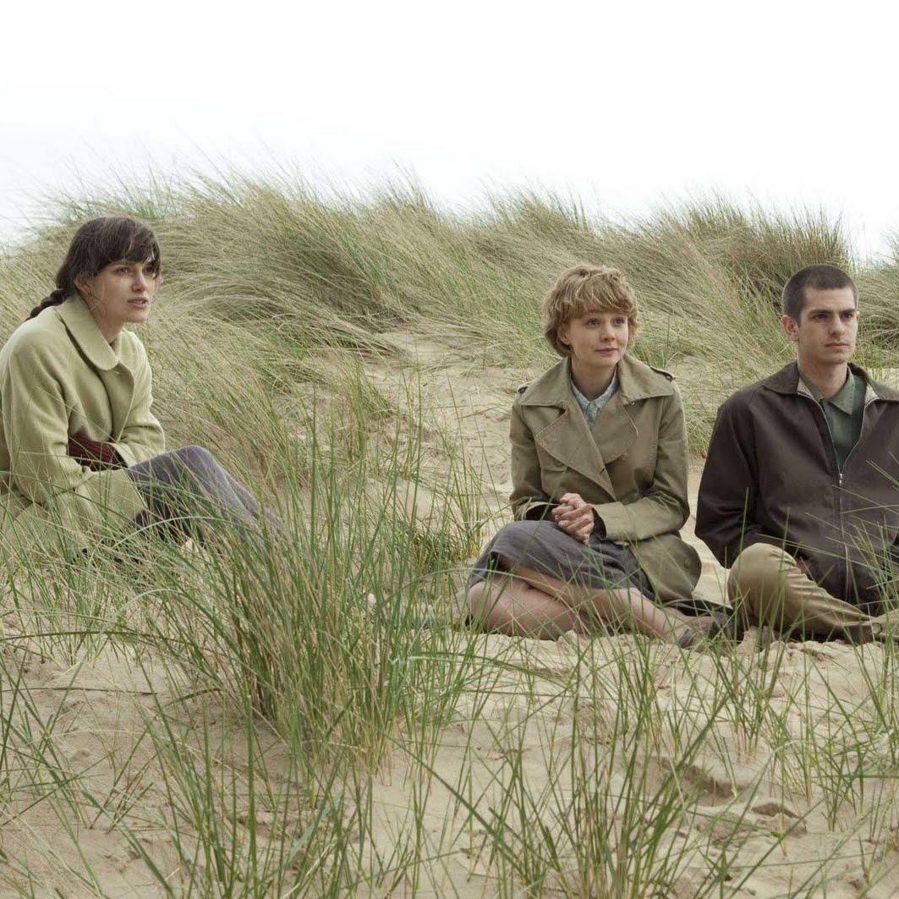

Never Let Me Go
Director: Mark Romanek, 2010

Forever 21
Washing Machines
La novela bajo la cual está adaptada esta película fue un best seller en el 2005, cuando Alex Garland leyó la historia antes de que fuera publicada ya estaba pensando en su adaptación al cine. Finalmente el 2010 pudo estrenarse y he aquí el resultado: Inolvidable.
La película cuenta la historia de Kathy, Tommy y Ruth, y sus vivencias en un internado en Inglaterra; juntos aprenderán la importancia de la amistad, del arte y del amor, mientras se preparan para aceptar y afrontar la realidad que se les tiene preparada.
Seré lo más franco; no tenía la más mínima idea de lo que iba a ver. No sabía que era un film adaptado, desconocía la sinopsis, desconocía el proyecto (salvo hace un par de semanas en el que pude oír de el) solo lo vi atraído por unas cuantas críticas previas (incluso algunas cargadas de negatividad), y por el reparto que contenía, un trío actoral joven y destacado. Tras visionarlo, quedé completamente satisfecho, tal vez es la mayor sorpresa fílmica de lo estrenado en el 2010.
Never let me go es un film lleno de poesía. Película contundente, brillante y apasionada. Nos muestra la historia de Kathy, y nos traslanda a su infancia en Hailsham (el internado) donde compartiría gratos y no tan gratos momentos con sus amigos, de los que se destacarían Ruth y Tommy. Luego avanza con solicitud hacia su adolescencia y hasta antes de llegar a la adultez.
¿Por qué es un film encantador? Porque detrás de una historia hermosa y tan bien compuesta se esconde un sinnúmero de metáforas y mensajes que solo disfrutando el film pueden llegar a entenderse. La película toma la iniciativa en la amistad; nos muestra de una forma tan profunda y bien detallada el cómo se enlazan la vida de estos tres niños, del cómo se educan, de la personalidad que se está formando en ellos, de sus temores, nos damos cuenta que son especiales, no son cualquier clase de niños; el director logra transmitir esa aparente frialdad de los primeros minutos con una delicadeza extrema, preparándonos de apoco para el desarrollo consiguiente.
También aborda el tema de la inocencia, la ingenuidad; con una premura bien dirigida nos encariñamos con esos niños, sin saber el por qué o el qué de su encierro. La película también se centra en el amor secreto de Kathy hacia Tommy, un amor que se ve interrumpido por el entremetimiento de Ruth, y que seguirá forjándose mientras crecen, y con el deseo o anhelo de que ella y el puedan estar juntos alguna vez. Luego está el punto sobre el cual la trama se centra y mantiene expectante al espectador, y del cual mucho se ha discutido. No lo llegamos a entender con exactitud, no sabemos a ciencia cierta qué es, nos preguntamos una y mil veces qué ha sucedido.
El director la vuelve más difícil al explicarla a medias y ¿acaso es necesario entenderlo completamente? No, porque uno queda pasmado y simplemente encantado con la historia; se discierne con lentitud y te provoca un nudo en la garganta. El film retrata al alma, busca responder a la pregunta ¿qué estamos haciendo? La vida es tan corta y muchos aun no encuentran el sentido, y otros simplemente sin importarles nada hacen y deshacen sin pensar en su futuro, mientras son otros los que pagarán las consecuencias. ***La película nos invita a reflexionar sobre los demás ¿acaso está bien utilizar a otro ser humano (un clon o especimen científico) para salvar a otro? ¿Acaso está bien determinar su existencia sin importar si verdaderamente tiene alma o sentimientos?*** Los detalles bien cuidados y minuciosos hacen que debatamos la pregunta del si verdaderamente es esta la sociedad que anhelamos.
La película está adelantada a su tiempo (pese a que nos narra desde 1978 a 1994) e indaga en temas que aunque se han discutido actualmente no han sido considerados oficialmente. El film con mucho o poco humanismo (depende de cómo se lo vea), retrata un mundo diferente, cargado de cierto nepotismo y donde la ciencia ha llegado a niveles impensables.
so en su esencia; además el mensaje del film queda complementado maravillosamente con las actuaciones del reparto: Carey Mulligan (Kathy), la protagonista, quien lleva el peso de la cinta y quien recuerda su vida, su corta vida, recrea su personaje con una profundidad inconfundible, deliciosamente bien ejecutada; luego está Andrew Garfield (Tommy), quien interpreta a un niño y joven de gran corazón, con un temperamento explosivo en ocasiones, encarnándolo excelentemente; y finalmente Keira Knightley (Ruth), con una simpatía que puede enamorar u odiar, grandiosa en su caracterización, con diálogos sutiles y bien matizados y una transformación espléndida. Además el resto de reparto está inmensamente bien realizados.
A todo esto sumarle su destacado apartado técnico, empezando por una fotografía increíble, retratando con gran atino los paisajes y combinando tonos que se quedan en la retina del espectador; un notable trabajo de vestuario y dirección artística, pero por sobre todo de una maravillosa banda sonora original, que la considero de lo en lo que va del año. El uso de los instrumentos de cuerdas queda perfecto para cada escena, simplemente espléndido. Y además, como si faltara poco, destacar el gran trabajo de guión por parte Kazuo Ishiguro (el mismo escritor del libro), quien se destaca por sus frases bien encasilladas y profundas. Y ya hablé del trabajo de dirección de Mark Romanek, sin el cual la película seria poco.
Finalmente me resta recomendársela a todo el mundo. Un conmovedor relato que no nos dejará indiferentes, que buscará mentalizarnos y llevarnos a recorrer con suma profundidad el alma humana y a inquietarnos sobre lo que es la existencia, más allá del triángulo amoroso del cual el film usa como escudo protector. Una obra maestra.